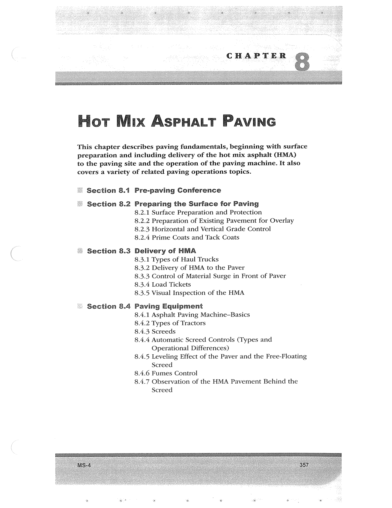

PDF page 391 · book page sequence 357


Searchable transcription
Unproofread OCR · 158 detected words; mean OCR confidence 95.34. Check technical values, symbols and table columns against the scan.
CHAPTER
Hot Mix AsPHALT PAVING
This chapter describes paving fundamentals, beginning with surface preparation and including delivery of the hot mix asphalt (HMA)
to the paving site and the operation of the paving machine. It also covers a variety of related paving operations topics.
Section 8.1 Pre-paving Conference
Section 8.2 Preparing the Surface for Paving 8.2.1 Surface Preparation and Protection 8.2.2 Preparation of Existing Pavement for Overlay 8.2.3 Horizontal and Vertical Grade Control 8.2.4 Prime Coats and Tack Coats
Section 8.3 Delivery of HMA 8.3.1 Types of Haul Trucks 8.3.2 Delivery of HMA to the Paver 8.3.3 Control of Material Surge in Front of Paver 8.3.4 Load Tickets 8.3.5 Visual Inspection of the HMA
Section 8.4 Paving Equipment
8.4.1 Asphalt Paving Machine-Basics
8.4.2 Types of Tractors
8.4.3 Screeds
8.4.4 Automatic Screed Controls (Types and Operational Differences)
8.4.5 Leveling Effect of the Paver and the Free-Floating Screed
8.4.6 Fumes Control
8.4.7 Observation of the HMA Pavement Behind the
Screed